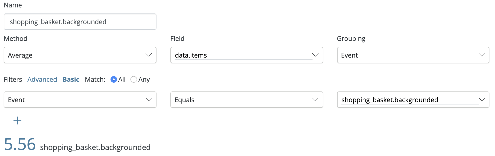
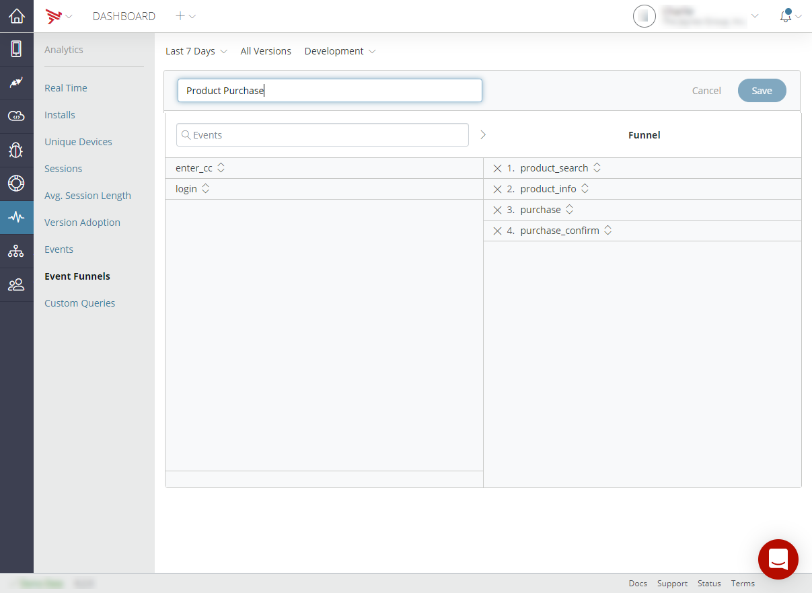
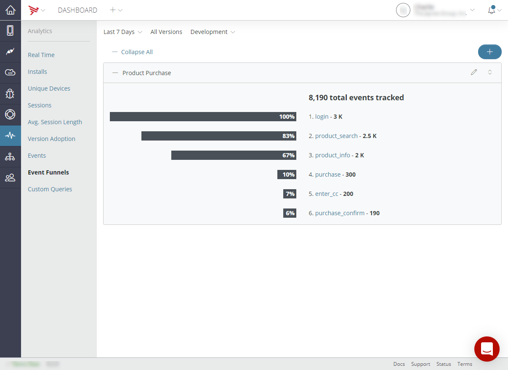

Archive note: all links and some images have been disabled or removed as their destinations and/or source locations no longer exist.
Appcelerator Analytics collects real-time data about your application's usage which can then be viewed in the Analytics dashboard. By default, the Analytics dashboard provides information about app installs, number of sessions, and average app session length (organized by app name, platform, and geography). Your app can also utilize custom analytic events and event funnels.
This document provides an overview of the features provided by Analytics, and how to use them using the Titanium SDK. If you are developing an iOS application with Objective-C or Swift or an Android application with Java, see APS Analytics for iOS or APS Analytics for Android for details on using Analytics.
For platform-specific details about how analytics captured, see Analytics Architecture
For information about viewing analytics data, see Managing Client Applications
Analytics refers to data about how your application has been used, as well as information about how users interact with your application. Analytics data is transmitted in the form of events.
Events are operational milestones in the application. Some events are generated automatically, such as those that mark ake sure your application is selected. installation, or the beginning and end of a session. Others may be custom events, which have a meaning specific to an application, such as tapping a specific button or opening a certain window.
A feature event represents an action a user could take in an application, such as 'liking an item' or launching a video'. Applications use the Titanium or APSAnalytics API to create custom events.
Event funnels let you define custom, ordered event sequences that let you track a specific user process, such as finding a product and making a purchase.
The Analytics dashboard organizes, analyzes, and presents analytics data captured for your applications. You also use the Analytics dashboard to create and view event funnels.
With the enactment of European Union's General Data Protection Regulation (GDPR), we've updated our Privacy Policy and the way the company collects and processes personal information. We welcome this change and understand the importance of data privacy as a human right. We are taking this opportunity to strengthen our global practices, expanding our robust data privacy practices, and will continue to support data privacy compliance.
For more information, please refer to [company]'s Privacy compliance program.
You can contact the [company] Data Protection Office by sending an email to privacy@[company].com. If you'd like to contact us in writing, see the following list of addresses that best applies to your location:
Note for using Titanium.Analytics API: End users are
able to opt out of Analytics using the Titanium.Analytics.optedOut property.
Enabling analytics is enabled by default when creating an project using Appcelerator
Studio (Studio). If for some reason it's not enabled, you can enable Axway
Appcelerator Platform Services in the project's tiapp.xml and deploy
your application.
To enable analytics in a new Appcelerator project:
Next steps
Enabling Appcelerator Services modifies your project's tiapp.xml file
and
other applications files. Do not modify these code changes as it may break your project.
See Platform Services for details on what changes are made to your
code.
The Titanium.Analytics API can be used to send custom
events and data, called feature events.
Titanium.Analytics.featureEvent(name, data) is used
to send a feature event. A feature event can be used to represent a user action, application
state or send a data payload.
Feature event names should be as generic as possible and without spaces (e.g: "home_window.open" instead of "Home Window Open"). This allows events to be easily consolidated and queried from Dashboard.
User actions can be logged using feature events, here's an example of logging a user opening the home window of an app.
// Detect when home window is opened.
home_window.addEventListener('open', e => {
// Send analytics feature event to log user action.
Ti.Analytics.featureEvent('home_window.open');
...
});
In some cases, additional data can also be sent which can be queried on Dashboard. In this example, an analytics event is sent when the user backgrounds their app.
// Detect when application is backgrounded.
Ti.App.addEventListener('paused', e => {
// Send analytics feature event with payload.
// In this example, the user may have added items to their shopping basket but decided to exit the app.
// We can log how many items were in the users basket and query this data on Dashboard.
Ti.Analytics.featureEvent('shopping_basket.backgrounded', {
items: shopping_basket.count
});
...
});
We can then create a custom query in Dashboard to calculate the average number of items users had in their basket upon backgrounding the application.

You use Dashboard to create and view event funnels. Using event funnels involves the following basic steps:
When you create an event funnel in Dashboard, you select the events you want to track, in the order that defines the process you want to track and analyze. For instance, in the following example, the user has created an event funnel named "Product Purchase" that tracks the progress of a retail customer through five basic phases: logging into the site, searching for products, reviewing product information, making a purchase, and confirming the purchase.

Note:An event funnel must contain at least two events
To create an event funnel
Once you've created an event funnel, you can begin analyzing the funnel results. The screenshot below shows the current results of the "Product Purchase" event funnel created above. As you can see, of all visitors to the home page, 83% of those searched for products, 67% of those who searched for products reviewed additional product information, and 10% of those who reviewed additional product information made a purchase.

To view an event funnel
To edit an event funnel
To remove an event funnel